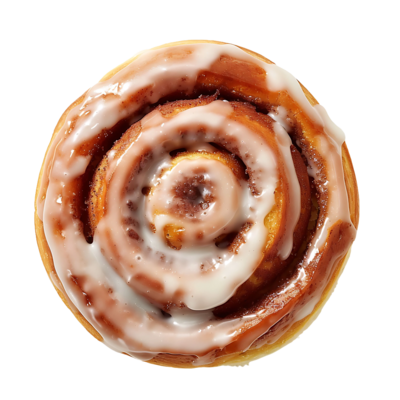
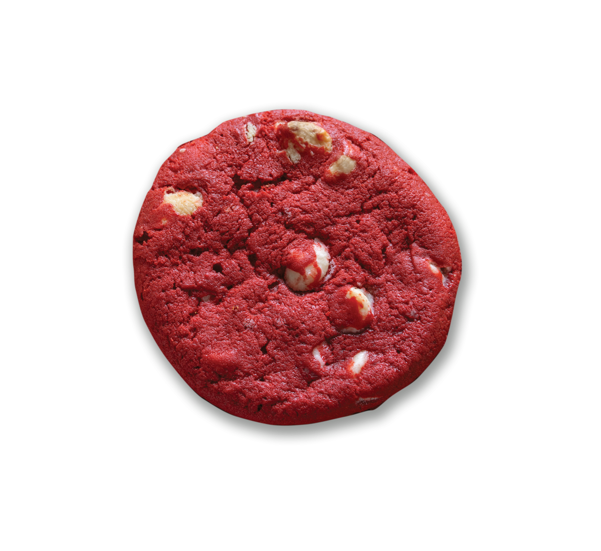
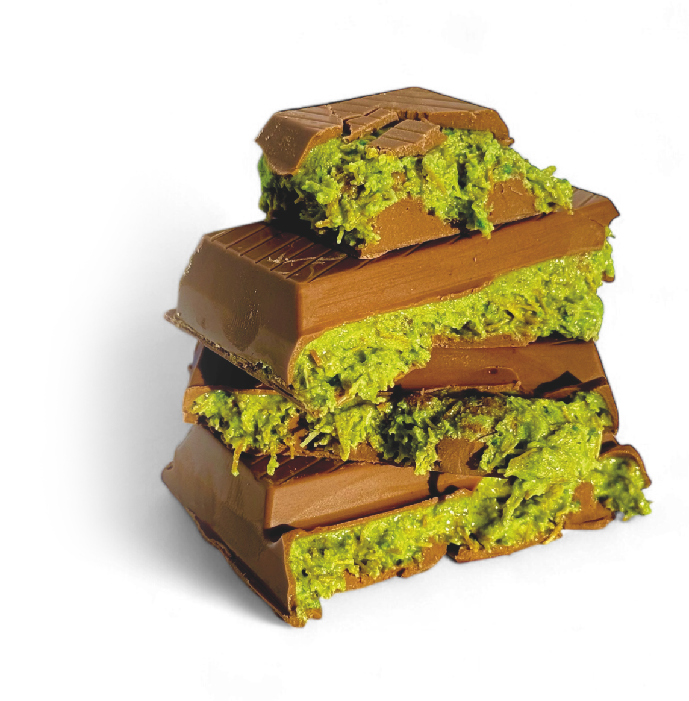
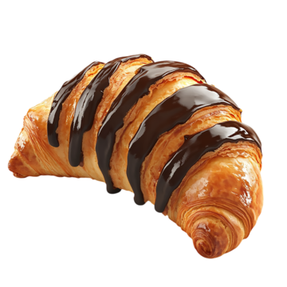
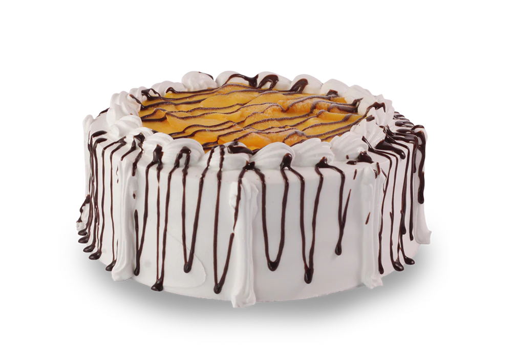
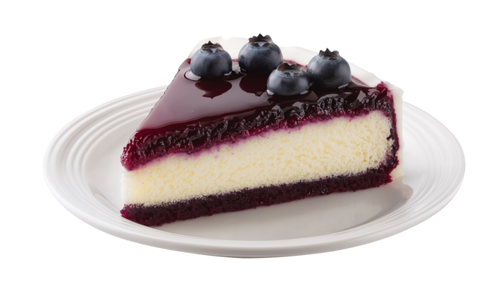
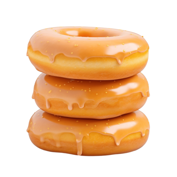
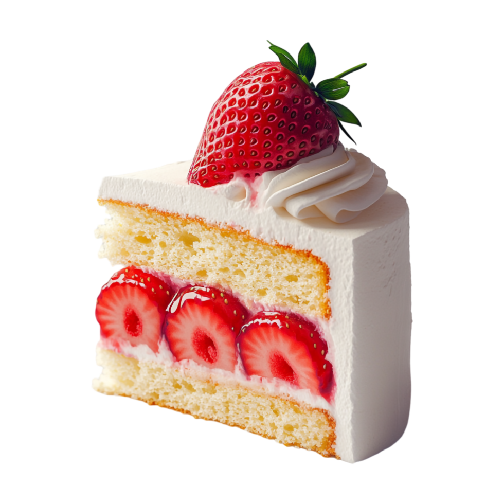
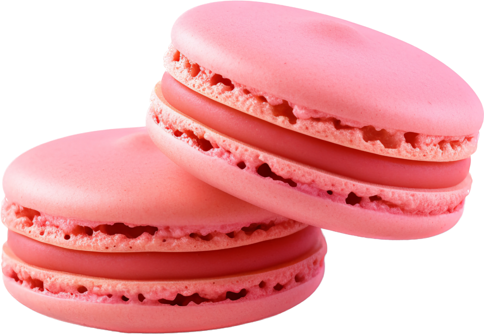

| Sticky Cinnamon Bun |
110 grams |
Starbucks Cinnamon Bun is a soft, fluffy pastry swirled with a rich cinnamon-sugar filling and topped with a sweet, creamy glaze. Baked to perfection, it offers the perfect balance of buttery dough and warm spice, making it a comforting treat any time of the day. Whether paired with coffee or enjoyed on its own, it’s a delicious way to satisfy your sweet cravings. |
Wheat flour, sugar, butter, cinnamon, milk, eggs, yeast, salt, vanilla extract, and icing (made with powdered sugar and cream). |
 |
| Red Velvet Cookies |
50 grams |
Cookies are sweet, baked treats available in a variety of flavors, including chocolate chip, oatmeal, peanut butter, and more. They can be soft and chewy or crisp and crunchy, making them a versatile snack for any occasion. Perfect with coffee, milk, or as an on-the-go treat, cookies are a favorite for all ages. |
Typically made with flour, sugar, butter, eggs, baking soda, vanilla extract, and mix-ins like chocolate chips or nuts. |
 |
| Fix Chocolate |
100 grams |
Dubai FIX Pistachio Chocolate is a luxurious chocolate bar filled with creamy pistachio and crispy kunafa (kataifi) pastry, coated in rich milk chocolate. It offers a unique blend of textures and flavors, making it a must-try for chocolate lovers. This indulgent treat has gained popularity for its smooth, nutty taste and delightful crunch. |
Milk chocolate, pistachio filling, sugar, cocoa butter, milk powder, crispy kunafa (kataifi) pastry, emulsifier (soy lecithin), natural flavors. |
 |
| Chocolate Crossiant |
100 grams |
Chocolate Croissant is a flaky, buttery pastry filled with rich, melted chocolate, offering a perfect balance of crisp texture and sweet indulgence. Often enjoyed as a breakfast treat or snack, it pairs wonderfully with coffee or tea. This French-inspired delight is loved for its golden, crispy layers and soft, chocolatey center. |
Wheat flour, butter, sugar, eggs, milk, yeast, salt, dark chocolate, and vanilla extract. |
 |
| Mango Bravo Cake |
165 grams |
This frozen dessert features layers of crunchy wafers, creamy chocolate mousse, whipped cream, and generous servings of sweet mango cubes. The cake is then elegantly drizzled with chocolate syrup and sprinkled with cashew nuts, offering a harmonious blend of sweetness, creaminess, and crunch. |
Mango Bravo is made with layers of crispy meringue, light chiffon cake, and rich chocolate mousse, creating a delightful mix of textures. It is filled with fresh ripe mango chunks and covered in whipped cream frosting for a creamy and fruity balance. The cake is then drizzled with chocolate syrup and sprinkled with crushed cashew nuts, adding a touch of sweetness and crunch. Each layer is carefully crafted using sugar, eggs, flour, butter, and fresh cream, ensuring a smooth and indulgent bite. Best served frozen, this cake is a refreshing and decadent treat for any occasion. |
 |
| Blueberry Cheesecake |
200 grams |
Blueberry Cheesecake is a rich and creamy dessert featuring a smooth cheesecake filling on a buttery graham cracker crust, topped with a luscious blueberry compote. The combination of tangy cream cheese and sweet blueberries creates a perfect balance of flavors, making it a favorite treat for all occasions. Each bite offers a velvety texture with a hint of crunch from the crust, making it an irresistible indulgence. |
Made with a buttery graham cracker crust, a creamy cheesecake filling of cream cheese, sugar, eggs, vanilla extract, and heavy cream, and topped with sweet blueberry compote made from fresh blueberries, sugar, lemon juice, and cornstarch. Some variations may include sour cream for extra richness or a gelatin layer for stability. |
 |
| Honey Glazed Donut |
70 grams |
Honey Glazed Donut is a soft, fluffy, and lightly fried pastry coated in a shiny, sweet honey glaze. The delicate balance of buttery dough and smooth honey glaze creates a melt-in-your-mouth experience with every bite. Perfect as a breakfast treat or an afternoon snack, this donut pairs well with coffee or tea. |
Made with flour, sugar, butter, eggs, milk, and yeast for a light and airy texture. The glaze consists of honey, powdered sugar, vanilla extract, and a touch of milk or butter, giving it a glossy, sweet finish. |
 |
| Strawberry Shortcake |
110 |
Strawberry Shortcake is a light and fluffy dessert made with layers of soft sponge cake, fresh strawberries, and sweet whipped cream. The combination of airy cake, juicy strawberries, and creamy frosting creates a refreshing and delicate flavor. It’s a popular choice for celebrations or as a delightful treat for any occasion. |
Made with soft sponge cake crafted from flour, sugar, eggs, butter, and vanilla extract. The filling and topping consist of fresh strawberries, whipped cream, powdered sugar, and a touch of lemon juice for a balanced sweetness. Some variations may include strawberry jam or custard layers for extra richness. |
 |
| Macaroon |
30 grams |
Macaroon is a sweet, chewy, and coconut-based treat, often golden brown on the outside with a soft, moist center. These bite-sized delights have a rich coconut flavor and are sometimes dipped in chocolate for extra indulgence. They are perfect as a light dessert or snack, offering a satisfying texture with every bite. |
Made with shredded coconut, egg whites, sugar, and sweetened condensed milk, giving it a chewy and slightly crisp texture. Some variations include vanilla extract, almond extract, or chocolate drizzle for added flavor. |
 |
| Cupcake |
120 grams |
Cupcake with Chocolate icing is a soft, moist mini cake topped with smooth, chocolate frosting. The combination of fluffy cake, sweet icing, creates a delicious balance of flavors. Perfect for celebrations or as a delightful snack, this classic treat is both visually appealing and irresistibly tasty. |
Made with flour, sugar, butter, eggs, milk, baking powder, for a light and fluffy cake base. The chocolate icing is usually cocoa powder, A chocolate sprinkles is placed on top for a sweet and decorative finish. |
|